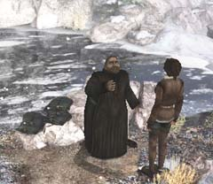

| 概要 | 地図 |
| 淡いヒント集 | ヒント集 | 的確なヒント集 |
| 攻略最短ルート |
| 場所選択に戻る |
ロマンスバーグ(前半)
|
医者はいませんか?
ハンスが突然倒れてしまった。この状態でこれ以上旅を続けるのは不可能と考えたあなたは、看病できる人を探さなければならなくなった。さて、この町のどこにそのような人がいるのだろうか。 ・看病できる人がいないか調べる ・修道院へ行く方法を調べる ・看病するために必要な”道具”について調べる ・修道院に入る方法を調べる と、いうことをしなければならない。  ・町で信用できるのはエミリオフ大佐、サーコス、マルカの3人だけである。 ・この3人から看病できる人、修道院へ行く方法、必要な道具について調べなくてはならない。 ・要するに、聞き込みである。 
・修道院に入れないのは、なぜだろうか?

・現在、最も修道院に詳しい人物は池にいる彼である。 ・彼はその理由をあなたには分からない言葉で説明した。それを、あなたに分かる言葉で説明してもらわねばならない。 ・彼は鳥に興味があるようだ。それを利用して修道士に遠くへ行ってもらおう。そうすれば、修道着を拝借できる。 ・”フェミーナ・インコンセスゥス”の意味が分かっているならば、修道着の必要性も分かるだろう。 ・では、鳥と関連した品物はどこで手にはいるか。この町に店はあったか?
| << 前へ |
|
| 場所選択に戻る |
| 概要 | 地図 |
| 淡いヒント集 | ヒント集 | 的確なヒント集 |
| 攻略最短ルート |
Syberia II
| 目次へ戻る | ページの上部へ |